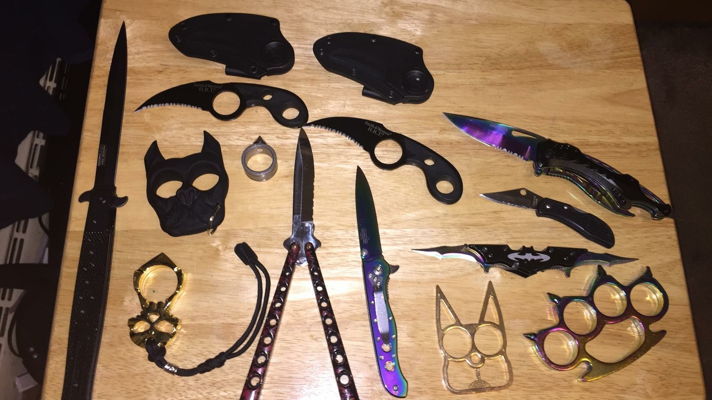

I became interested in collecting books ever since I stepped on the age of 13.I collected books from every places that I
visited.For now,I already have 13 books.Those where from Manila,Pasay,Quezon,Laguna,Cebu and Davao City.
Those books served as my souvenirs in every places that I went to, instead of buying keychains and shirts.
Weapon Collecting

"The image is not the actual weapons that I have."
I started to became interested to weapons when I was in Grade 9.It was because of the influenced of the sci-fi
stories that I've read that was all about zombies made by a chemical that was created by a crazy scientist.
For me that is not possible to happen because of the technologies nowadays.There were drugs created that once intake,
it will make someone act like a zombie the only different was that,they don't eat flesh of people.Now that made me to collect
weapons or other sharp objects that can be use for self-defence.Crazy right?Well,there is nothing wrong in being prepared
in a world full of cruelty.
Stuffed Toys Collecting
I love collecting furry stuffed toys because it makes me comfortable caressing their furr especially at night.
This interest of mine started since time immemorial.Now I'm still collecting stuff toys with different sizes and
I can't count how many toys I have now.